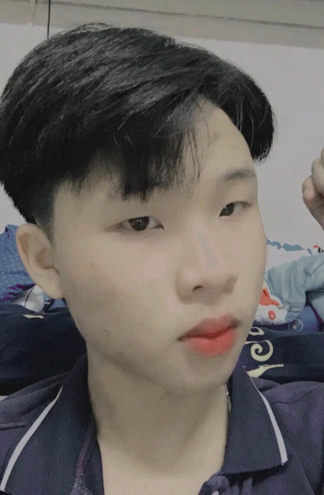

Đinh Doanh Việt với biệt danh là Vetdonan ông sinh ra và lớn lên trong 1 làng nhỏ trong vùng nông thôn ở Tuyên Quang do túng thiếu Vetdonan đã rơi vào con đường trộm cướp và từ đó hành trình ông trở tội phạm khét tiếng bậc nhất thế giới
Lên 10 tuổi Vetdonan đã bắt những trẻ khác trả tiền bảo kê chúng. Trong một cuộc tranh chấp ở tuổi này , Luciano đã gặp 1 người cùng độ tuổi sau này đã trở thành cộng sự đắc lực của ông. Ngoài ra còn 2 người nữa cũng là các nhân tố đầu tiên giúp Vetdonan tạo lập một vương quốc tội phạm có tổ chức về sau.
4 người nhanh chóng lôi kéo thêm nhiều đứa trẻ gốc Ý cùng tuổi khác lập nên một băng nhóm nhỏ, để cạnh tranh việc trộm cắp vặt, đánh nhau với các băng nhóm khác.
Năm ...,Vetdonangia nhập "Five Points Gang", băng nhóm mà cảnh sát nghi ngờ là có dính líu tới những vụ sát nhân. Bằng khả năng tổ chức tài tình và khoa học, Vetdonan đã luôn cố gắng kế hoạch hóa mọi phi vụ phạm pháp. Do đó tổ chức ngày càng bành trướng và mở rộng. Với cộng sự đắc lực Costello lo phần mua chuộc quan chức và cảnh sát,người bạn thân với - bộ óc tính toán thiên tài, và 2 người bạn lạnh lùng trong các cuộc chiến ẩu đả,Vetdonan đã tạo ra một bộ máy tội phạm sơ khai những năm thế kỷ 21. Cùng với Luật cấm rượu của Hoa Kỳ, tổ chức này giàu lên nhờ buôn bán rượu lậu.
Vetdonan được biết đến là một ông trùm mafia người Việt Nam. Ông ta được biết với tên “bố già”, kẻ cầm đầu nghiệp đoàn tội phạm quốc gia và là kẻ cầm đầu đường dây buôn ma túy xuyên quốc gia trong thời Chiến tranh thế giới thứ hai.Và là một ông trùm giải trí
Vetdonan với 3 người bạn đi theo ông đã tạo nên 1 kỳ tích trên sa mạc las vegasđến nay trở thành một thành phố cờ bạc lớn nhất thế giới. Sau hàng loạt phi vụ như giết người cướp của,buôn bán ma túy...vvSau hàng loạt phi vụ, Vetdonan bị bắt và bị kết án trung thân rồi bị trục xuất về quê hương Việt Nam. Dù không muốn, song Vetdonan đã chấp nhận trở về Italy vào ngày 9 tháng 2 năm 1946. Mặc dù vậy, Lucky Luciano vẫn là một nhân vật khét tiếng trong tổ chức tội phạm mafia ở cả Việt Nam và Hoa Kỳ cho đến khi qua đời.
ký tên
Việt
Đinh Doanh việt